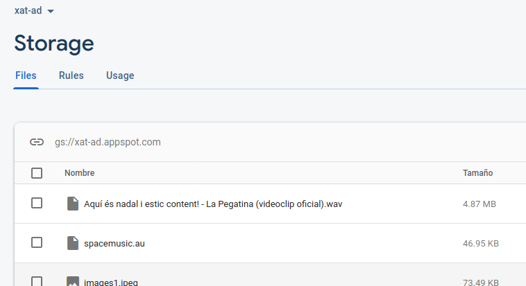

Exercicis
Exercici 7.1 (Realtime Database)
Farem una aplicació per a agafar unes dades corresponents a unes estadístiques guardades en Realtime Database de Firebase, concretament en la següent aplicació:
- Compte de Google: ad.ieselcaminas@gmail.com
- Contrasenya: ieselcaminas_ad
- Aplicació: xat-ad
La informació a la qual volem accedir està en el array EstadisticaVariacioPoblacional amb les províncies, i en cada província tenim el nom (nombre) i en un array anomenat data tenim diferents anys amb el número d'any i el valor de la variació de la població:

PODEU FER L'APLICACIÓ EN INTELLIJ O EN ANDROID
Aplicació en IntelliJ
Podeu utilitzar el "esquelet" que hi ha a continuació. En ell tenim:
- Un JCombobox per a triar la província
- Un JTextArea, per a mostrar les dades de la província triada
Haureu d'incorporar el fitxer json on està la configuració i la clau privada de la connexió. El fitxer s'anomena xat-ad-firebase-adminsdk-my2d0-8c69944b34.json, i el teniu com un recurs en l'aula virtual. La URL d'accés a aquesta Base de Dades és: https://xat-ad.firebaseio.com/
L'aplicació ha de agafar les províncies (observeu que estan en una llista) i guardar-les en un JComboBox, per a poder trair-les. Quan es trie una província, s'haurà de mostrar en el JTextArea la informació corresponent a la província, agafant tots els anys de l'array Data (observeu que també és una llista) i mostrar l'any i el valor de la variació poblacional (respectivament NombrePeriodo i Valor)

A continuació teniu l'esquelet del programa que podeu utilitzar, que el podeu guardar en el fitxer Kotlin T7Ex1_EstadisticaRD.kt:
import javax.swing.JFrame
import javax.swing.JLabel
import javax.swing.JComboBox
import javax.swing.JTextArea
import java.awt.BorderLayout
import javax.swing.JPanel
import java.awt.FlowLayout
import java.awt.Color
import javax.swing.JScrollPane
import java.io.FileInputStream
import com.google.firebase.FirebaseOptions
import com.google.auth.oauth2.GoogleCredentials
import com.google.firebase.FirebaseApp
import com.google.firebase.database.FirebaseDatabase
import com.google.firebase.database.DataSnapshot
import com.google.firebase.database.DatabaseError
import com.google.firebase.database.ChildEventListener
import java.awt.EventQueue
class EstadisticaRD : JFrame() {
val etProv = JLabel("Provincia: ")
val provincia = JComboBox<String>()
val etiqueta = JLabel("Missatges:")
val area = JTextArea()
// en iniciar posem un contenidor per als elements anteriors
init {
defaultCloseOperation = JFrame.EXIT_ON_CLOSE
setBounds(100, 100, 450, 450)
setLayout(BorderLayout())
// contenidor per als elements
//Hi haurà títol. Panell de dalt: últim missatge. Panell de baix: per a introduir missatge. Panell central: tot el xat
val panell1 = JPanel(FlowLayout())
panell1.add(etProv)
panell1.add(provincia)
getContentPane().add(panell1, BorderLayout.NORTH)
val panell2 = JPanel(BorderLayout())
panell2.add(etiqueta, BorderLayout.NORTH)
area.setForeground(Color.blue)
area.setEditable(false)
val scroll = JScrollPane(area)
panell2.add(scroll, BorderLayout.CENTER)
getContentPane().add(panell2, BorderLayout.CENTER)
setVisible(true)
val serviceAccount = FileInputStream("xat-ad-firebase-adminsdk-my2d0-8c69944b34.json")
val options = FirebaseOptions.Builder()
.setCredentials(GoogleCredentials.fromStream(serviceAccount))
.setDatabaseUrl("https://xat-ad.firebaseio.com").build()
FirebaseApp.initializeApp(options)
// Posar tota la llista de províncies al JComboBox anomenat provincia
provincia.addActionListener() {
// Posar la informació de tots els anys en el JTextArea anomenat area
}
}
}
fun main(args: Array<String>) {
EventQueue.invokeLater {
EstadisticaRD().isVisible = true
}
}Aplicació en Android
- Creeu-vos una nova aplicació d'Android anomenada T7Ex1_EstadisticaRD.
- Incorporeu en ella:
- Un Spinner per a triar la província
- Un TextView, per a mostrar les estadístiques de la província
- Connecteu a la Base de Dades Firebase abans esmentada
L'aplicació ha de agafar les províncies (observeu que estan en una llista) i guardar-les en el Spinner, per a poder trair-les. Quan es trie una província, s'haurà de mostrar en el TextView la informació corresponent a la província, agafant tots els anys de l'array Data (observeu que també és una llista) i mostrar l'any i el valor de la variació poblacional (respectivament NombrePeriodo i Valor)
A continuació teniu un exemple de activity_main.xml que us podria servir:
<?xml version="1.0" encoding="utf-8"?>
<androidx.constraintlayout.widget.ConstraintLayout xmlns:android="http://schemas.android.com/apk/res/android"
xmlns:app="http://schemas.android.com/apk/res-auto"
xmlns:tools="http://schemas.android.com/tools"
android:layout_width="match_parent"
android:layout_height="match_parent"
tools:context=".MainActivity">
<Spinner
android:id="@+id/combo"
android:layout_width="0dp"
android:layout_height="wrap_content"
app:layout_constraintEnd_toEndOf="parent"
app:layout_constraintStart_toStartOf="parent"
app:layout_constraintTop_toTopOf="parent" />
<TextView
android:id="@+id/area"
android:layout_width="0dp"
android:layout_height="0dp"
android:scrollbars="vertical"
android:text=""
app:layout_constraintBottom_toBottomOf="parent"
app:layout_constraintEnd_toEndOf="parent"
app:layout_constraintHorizontal_bias="1.0"
app:layout_constraintStart_toStartOf="parent"
app:layout_constraintTop_toBottomOf="@+id/combo"
app:layout_constraintVertical_bias="0.0" />
</androidx.constraintlayout.widget.ConstraintLayout>
I a continuació l'esquelet del programa per si el voleu utilitzar ja que estan les recomacions-indicacions:
import androidx.appcompat.app.AppCompatActivity
import android.os.Bundle
import android.util.Log
import android.view.View
import android.widget.AdapterView
import android.widget.ArrayAdapter
import androidx.core.view.size
import com.google.firebase.database.*
import kotlinx.android.synthetic.main.activity_main.*
class MainActivity : AppCompatActivity() {
override fun onCreate(savedInstanceState: Bundle?) {
super.onCreate(savedInstanceState)
setContentView(R.layout.activity_main)
val pantPrincipal = this // per a utilitzar-lo en el ArrayAdapter del Spinner
// Inicialització de la referència i altres variables
// Lectura de totes les províncies per a posar-les després al Spinner
// Es recomana llegir els fills de la llista, per tant addChildEventListener
// Inicialització del Spinner, amb un ArrayAdapter passant-li un ArrayList amb les províncies
// es recomana fer-ho dins d'un addListenerForSingleValueEvent sobre la mateixa referència
// per assegurar-nos que l'ArrayList ja té les províncies
// Instruccions per a posar en el TextView les dades de la provincia seleccionada
// Dins del onItemSelectedListener del Spinner també es recomana llegir els fills de la llista,
// per tant una altra vegada addChildEventListener
}
}
Com posa en les indicacions, podem tenir la complicació de que quan construïm el Spinner, encara no estiguen les dades llegides. Ho podem solventar afegint un altre listener, el addListenerForSingleValueEvent, que segur que s'executarà després del addChildEventListener
Exercici 7.2 (Cloud Firestore)
Farem un exercici paregut a l'anterior, però ara les dades estaran guardades en Cloud Firestore.
Es tractaran d'unes estadístiques lleugerament diferents de les anteriors, i sobretot, organitzades de forma diferent, més a l'estil de Cloud Firestore.
Les dades de connexió són les mateixes que en l'exercici anterior:
- Compte de Google: ad.ieselcaminas@gmail.com
- Contrasenya: ieselcaminas_ad
- Aplicació: xat-ad
Però ara ens connectem a Cloud Firestore, i tindrem totes les dades en la col·lecció Estadistica. Tindrem un document per cada província i any, amb la població de dones i homes. Per tant, com que hi ha 52 províncies i 10 anys d'estadístiques, tindrem un total de 520 documents.
Com es veu en la imatge, en cada document es guarda: la província, l'any, el número de dones i el número d'homes.
PODEU FER L'APLICACIÓ EN INTELLIJ O EN ANDROID
Aplicació en IntelliJ
Podeu utilitzar el "esquelet" que hi ha a continuació. En ell tenim:
- Un JCombobox per a triar la província
- Un JTextArea, per a mostrar les dades de la província triada
Haureu d'incorporar el fitxer json on està la configuració i la clau privada de la connexió. El fitxer s'anomena xat-ad-firebase-adminsdk-my2d0-8c69944b34.json, i el teniu com un recurs en l'aula virtual.
- L'aplicació ha de agafar les províncies per a guardar-les en un JComboBox i poder triar-les, però tenint en compte que eixiran repetides (concretament 10 vegades cada província). Podeu afegir-les a un Mutable Set per a evitar que estiguen repetides, ja que un set es defineix com un conjunt no ordenat de valors que no es poden repetir. Així, si afegim un valor que ja estava, senzillament no el repetirà. Després només haureu d'ordenar aquest set.
- Quan es trie una província, s'haurà de mostrar en el JTextArea la informació corresponent a la província, agafant tots els documents d'aquesta província, i millor ordenar-los per l'any. S'haurà de mostrar aquest any, i el número de dones i d'homes (respectivament any , Dones i Homes)
Aquest seria l'aspecte:
I aquest seria l'esquelet, que podeu guardar amb el nom T7Ex2_EstadisticaCF.kt:
import javax.swing.JFrame
import javax.swing.JLabel
import javax.swing.JComboBox
import javax.swing.JTextArea
import java.awt.BorderLayout
import java.awt.FlowLayout
import javax.swing.JPanel
import java.awt.Color
import javax.swing.JScrollPane
import java.io.FileInputStream
import com.google.firebase.FirebaseOptions
import com.google.auth.oauth2.GoogleCredentials
import com.google.firebase.FirebaseApp
import com.google.firebase.cloud.FirestoreClient
import java.awt.EventQueue
class EstadisticaCF : JFrame() {
val etCombo = JLabel("Llista de províncies:")
val comboProv = JComboBox<String>()
val etiqueta = JLabel("Estadístiques:")
val area = JTextArea()
// en iniciar posem un contenidor per als elements anteriors
init {
defaultCloseOperation = JFrame.EXIT_ON_CLOSE
setBounds(100, 100, 450, 400)
setLayout(BorderLayout())
// contenidor per als elements
val panell1 = JPanel(FlowLayout())
panell1.add(etCombo)
panell1.add(comboProv)
getContentPane().add(panell1, BorderLayout.NORTH)
val panell2 = JPanel(BorderLayout())
panell2.add(etiqueta, BorderLayout.NORTH)
area.setForeground(Color.blue)
area.setEditable(false)
val scroll = JScrollPane(area)
panell2.add(scroll, BorderLayout.CENTER)
getContentPane().add(panell2, BorderLayout.CENTER)
setVisible(true)
val serviceAccount = FileInputStream("xat-ad-firebase-adminsdk-my2d0-8c69944b34.json")
val options = FirebaseOptions.Builder()
.setCredentials(GoogleCredentials.fromStream(serviceAccount))
.build()
FirebaseApp.initializeApp(options)
val db = FirestoreClient.getFirestore()
// Instruccions per a omplir el JComboBox amb les províncies
// Instruccions per agafar la informació de tots els anys de la província triada
comboProv.addActionListener() {
}
}
fun main(args: Array<String>) {
EventQueue.invokeLater {
EstadisticaCF().isVisible = true
}
}Aplicació en Android
- Creeu-vos una nova aplicació d'Android anomenada T7Ex2_EstadisticaCF.
- Incorporeu en ella:
- Un Spinner per a triar la província
- Un TextView, per a mostrar les estadístiques de la província
- Connecteu a la Base de Dades Firebase abans esmentada
- Incorporeu la següent línia en el build-gradle de l'aplicació, per a que no us done error:
multiDexEnabled true
L'aplicació ha de:
- Primer ha d'agafar les províncies per a guardar-les en el Spinner i poder triar-les, però tenint en compte que eixiran repetides (concretament 10 vegades cada província). Podeu afegir-les a un set per a evitar que estiguen repetides, ja que un set es defineix com un conjunt no ordenat de valors que no es poden repetir. Així, si afegim un valor que ja estava, senzillament no el repetirà. Després només haureu d'ordenar aquest set.
- Quan es trie una província, s'haurà de mostrar en el TextView la informació corresponent a la província, agafant tots els documents d'aquesta província, i millor ordenar-los per l'any. S'haurà de mostrar aquest any, i el número de dones i d'homes (respectivament any , Dones i Homes)
A continuació teniu un exemple de activity_main.xml que us podria servir:
<?xml version="1.0" encoding="utf-8"?>
<androidx.constraintlayout.widget.ConstraintLayout xmlns:android="http://schemas.android.com/apk/res/android"
xmlns:app="http://schemas.android.com/apk/res-auto"
xmlns:tools="http://schemas.android.com/tools"
android:layout_width="match_parent"
android:layout_height="match_parent"
tools:context=".MainActivity">
<Spinner
android:id="@+id/combo"
android:layout_width="0dp"
android:layout_height="wrap_content"
app:layout_constraintEnd_toEndOf="parent"
app:layout_constraintStart_toStartOf="parent"
app:layout_constraintTop_toTopOf="parent" />
<TextView
android:id="@+id/area"
android:layout_width="0dp"
android:layout_height="0dp"
android:scrollbars="vertical"
android:text=""
app:layout_constraintBottom_toBottomOf="parent"
app:layout_constraintEnd_toEndOf="parent"
app:layout_constraintHorizontal_bias="1.0"
app:layout_constraintStart_toStartOf="parent"
app:layout_constraintTop_toBottomOf="@+id/combo"
app:layout_constraintVertical_bias="0.0" />
</androidx.constraintlayout.widget.ConstraintLayout>
I aquest seria l'esquelet del programa principal amb els suggeriments:
import android.os.Bundle
import android.view.View
import android.widget.AdapterView
import android.widget.ArrayAdapter
import androidx.appcompat.app.AppCompatActivity
import com.google.firebase.firestore.FirebaseFirestore
import kotlinx.android.synthetic.main.activity_main.*
class MainActivity : AppCompatActivity() {
override fun onCreate(savedInstanceState: Bundle?) {
super.onCreate(savedInstanceState)
setContentView(R.layout.activity_main)
val pantPrincipal = this // per a utilitzar-lo en el ArrayAdapter del spinner
// Inicialització de la referència i altres variables
val db = FirebaseFirestore.getInstance()
val colRef = db.collection("Estadistica")
// Lectura de totes les províncies per a posar-les després al Spinner
// S'hauran de llegir tots els documents de la col·lecció, per tant addSnapshotListener
// sobre la col·lecció
// Inicialització del Spinner, amb un ArrayAdapter passant-li un HashSet ordenat amb les províncies
// es recomana fer-ho dins d'un addOnSuccessListener sobre la mateixa col·lecció
// per assegurar-nos que el HashSet ja té les províncies
// Instruccions per a posar en el TextView les dades de la provincia seleccionada
// Dins del onItemSelectedListener del Spinner també s'hauran de llegir els documents de la col·lecció
// que són de la província triada, per tant una altra vegada addSnapshotListener
}
}
Exercici 7.3 (Cloud Firestore - Cloud Storage) (voluntari)
Aquest exercici serà per a combinar guardar dades en Cloud Firestore amb fitxers guardats en Cloud Storage.
En compte de guardar imatges, ara guardarem audios. No podrem reproduir tots els tipus d'audio, però tots els audios que estiguen guardats es podran reproduir.
Les dades de connexió són les mateixes que en exercicis anteriors:
- Compte de Google: ieselcaminas.ad@gmail.com
- Contrasenya: ad_ieselcaminas
- Aplicació: xat-ad
L'estructura de dades és molt semblant a l'exemple en què guardàvem imatges
- En Cloud Firestore guardem en una col·lecció anomenada Audios una sèrie de documents, i en cadascun tindrem el nom de l'audio i el nom del fitxer
- En Cloud Storage guardem els fitxer d'audio
|  |
Podeu fer l'exercici tant en IntelliJ com en Android. En Android utilitzarem el component MediaPlayer. Aquest controlador també està disponible utilitzant les llibreries de JavaFX, però açò suposaria haver d'instal·lar plugins a IntelliJ, i no valdrà la pena. Utilitzarem un altre component que ja ve instal·lat, encara que limitat, ja que no en permetrà reproduir els fitxers .mp3, però sí els formats més senzills com .wav i .au
Aplicació en IntelliJ
El component que utilitzarem és AudioSystem, situada en javax.sound.sampled. Només l'hem d'inicialitzar un clip a partir de AudioSystem, i per una altra banda un AudioInputStream. Posteriorment obrirem el clip amb el AudioInputStream. Després només faltarà posar en marxa l'audio i parar-lo:
- Per a inicialitzar val audioInputStream = AudioSystem.getAudioInputStream(InputStream) i val clip = AudioSystem.getClip(). Haurem d'aconseguir l'InputStream bé a través del ByteBuffer o del fitxer temporal del nostre fitxer una vegada el tinguem baixat
- Després obrirem el clip amb: clip.open(audioInputStream)
- Per a posar en marxa (play) clip.start()
- Per a parar (stop) clip.stop()
En definitiva, quedarà així:
...
val clip = AudioSystem.getClip()
...
val audioInputStream = AudioSystem.getAudioInputStream(inputStream)
clip.close() // ha d'estar tancat abans de tornar a obrir-lo
clip.open(audioInputStream)
...
clip.stat()
...
clip.stop()
...Us heu de muntar un JComboBox per a visualitzar la llista de audios, un botó per a posar en marxa l'audio seleccionat i un botó per a parar-lo
Recordeu que amb el controlador utilitzat no es poden reproduir els fitxers mp3.
Aplicació en Android
El component que utilitzarem és MediaPlayer. Només l'hem d'inicialitzar i després posar en marxa l'audio i parar-lo:
- Per a inicialitzar val clip: MediaPlayer? = MediaPlayer.create(context, fitxer de so)
- Per a posar en marxa (play) clip.start()
- Per a parar (stop) clip.stop()
Si volem tornar a posar en marxa un audio que havíem parat el so, millor situar-lo a principi amb clip.seek(0)
Us heu de muntar un Spinner per a visualitzar la llista de audios, un botó per a posar en marxa l'audio seleccionat i un botó per a parar-lo.
Potser en aquest cas no es puguen reproduir els fitxers .au
Exercici 7.4 (Realtime Database) (voluntari)
Farem una aplicació en IntelliJ i/o Android per a fer partides del Mastermind compartides. El joc consisteix a endevinar un número de 4 xifres no repetides. Quan es fa una tirada, l'aplicació contestarà quants xifres hi ha encertades i en el lloc corresponent, i quantes xifres encertades però fora del lloc.
Per exemple: Suposem que el número a endevinar és el 7481. A mida que anem fent tirades hem d'anar endevinant quin és el número:
- 1234 0 2 (que indica que no hi ha cap xifra al seu lloc, i que hi ha 2 encertades fora del lloc)
- 5678 0 2
- 1256 0 1
- 3487 2 1
- 7482 3 0
- 7481 4 0
Els usuaris connectats a l'aplicació (amb un nom d'usuari, millor si és breu, per exemple 3 caràcters, a l'estil de J01, J02, ...) han de poder fer jugades, i l'aplicació ha de mostrar primer el nom del jugador, la tirada i el resultat.
Per més simplicitat, només es guardarà una partida, però quan finalitze s'ha de poder començar una altra (esborrant les tirades de la partida anterior). Les dades que guardarem de la partida són:
Mastermind (serà la clau on ho guardarem tot)
- Número secret a endevinar: numSecret (string)
- Partida en marxa o bé ja finalitzada: finalitzada (boolean)
- Llista de tirades: tirades. De cadascuna:
- Jugador que l'ha feta: nom (string)
- Jugada feta: tirada (string)
- Encertades col·locades: colocades (integer)
- Encertades no col·locades: desordenades (integer)
Tindrem els mateixos elements que en l'exemple del xat:
- Una etiqueta per a indicar nom de jugador
- Un JTextField o EditText per a introduir el nom del jugador. Aquestes dues coses han d'anar dalt de tot, en la mateixa línia.
- Un JTextArea o TextView, per a anar mostrant les tirades de la partida
- Un altre JTextField o EditText per a introduir la nova tirada.
- Un botó d'Enviar. Aquestes dues coses han d'anar baix de tot, en la mateixa línia.
- Per últim també tindrem un botó que inicialment està ocult per a començar una nova partida. Quan es visualitza tapa el JTextField o EditText de la nova tirada i el botó d'enviar, amb la qual cosa no es poden fer més intents
Inicialment s'ha de comprovar si la partida està en marxa. Si no ho està (o si no hi ha cap partida perquè és la primera vegada que s'executa):
- S'ha de generar un nou número secret i guardar-lo
- S'ha de marcar com a partida no finalitzada
Si ja està en marxa, senzillament s'ha d'agafar el número secret i s'han de visualitzar les tirades existents, i esperar per si es fa una tirada.
Quan es fa una tirada:
- S'ha de guardar el jugador, la tirada, el número de encertades col·locades i el número d'encertades no col·locades.
- Si s'ha encertat el número, s'ha de marcar com a finalitzada la partida, i s'ha de visualitzar el botó per a generar una nova partida
Les dades de connexió són les mateixes que l'exercici anterior:
- Compte de Google: ieselcaminas.ad@gmail.com
- Contrasenya: ad_ieselcaminas
- Aplicació: xat-ad
Us passe els mètodes genera(), que genera un número aleatori de 4 xifres no repetides, i comprova(String,String) que torna les xifres encertades col·locades i encertades no col·locades:
fun genera(): String {
val i0 = (Math.random() * 10).toInt()
var i1 = (Math.random() * 10).toInt()
while (i1 == i0)
i1 = (Math.random() * 10).toInt()
var i2 = (Math.random() * 10).toInt()
while (i2 == i0 || i2 == i1)
i2 = (Math.random() * 10).toInt()
var i3 = (Math.random() * 10).toInt()
while (i3 == i0 || i3 == i1 || i3 == i2)
i3 = (Math.random() * 10).toInt()
return (i0.toString() + i1.toString() + i2.toString() + i3.toString())
}
fun comprova(num: String, sec: String): IntArray {
var pos = 0
var nopos = 0
for (i in 0..3)
for (j in 0..3)
if (num[i] == sec[j])
if (i == j) pos++
else nopos++
return intArrayOf(pos, nopos)
}Aplicació en IntelliJ
L'aplicació s'ha de guardar en el fitxer T7Ex4_Mastermind_RD.kt, i aquest seria l'esquelet:
package exercicis
import com.google.auth.oauth2.GoogleCredentials
import com.google.firebase.FirebaseApp
import com.google.firebase.FirebaseOptions
import com.google.firebase.database.*
import java.awt.*
import java.io.FileInputStream
import javax.swing.*
class Tirada(var nom: String, var tirada: String, var colocades: Int, var desordenades: Int)
class T7Ex4_Mastermind_RD : JFrame() {
val etJugador = JLabel("Nom Jugador: ")
val jugador = JTextField(15)
val etiqueta = JLabel("Tirades:")
val area = JTextArea()
val etIntroduccioTirada = JLabel("Introdueix tirada:")
val enviar = JButton("Enviar")
val tirada = JTextField(15)
val botoPartidaNova = JButton("PARTIDA NOVA")
var numSecret = ""
// en iniciar posem un contenidor per als elements anteriors
init {
defaultCloseOperation = JFrame.EXIT_ON_CLOSE
setBounds(100, 100, 450, 300)
setLayout(BorderLayout())
// contenidor per als elements
//Hi haurà títol. Panell de dalt: últim missatge. Panell de baix: per a introduir missatge. Panell central: tot el xat
val panell1 = JPanel(FlowLayout())
panell1.add(etJugador)
panell1.add(jugador)
getContentPane().add(panell1, BorderLayout.NORTH)
val panell2 = JPanel(BorderLayout())
panell2.add(etiqueta, BorderLayout.NORTH)
area.setForeground(Color.BLUE)
area.isEditable=false
val scroll = JScrollPane(area)
panell2.add(scroll, BorderLayout.CENTER)
getContentPane().add(panell2, BorderLayout.CENTER)
val panell3 = JPanel(FlowLayout())
panell3.add(etIntroduccioTirada)
panell3.add(tirada)
panell3.add(enviar)
getContentPane().add(panell3, BorderLayout.SOUTH)
botoPartidaNova.isVisible=false
panell3.add(botoPartidaNova)
setVisible(true)
enviar.addActionListener { enviar() }
botoPartidaNova.addActionListener { partidaNova() }
val serviceAccount = FileInputStream("xat-ad-firebase-adminsdk-my2d0-8c69944b34.json")
val options = FirebaseOptions.builder()
.setCredentials(GoogleCredentials.fromStream(serviceAccount))
.setDatabaseUrl("https://xat-ad.firebaseio.com/").build()
FirebaseApp.initializeApp(options)
title="MASTERMIND"
// Exemple de listener de lectura única addListenerForSingleValue()
// Per a AGAFAR SI ESTÀ LA PARTIDA EN MARXA I EL NÚMERO SECRET
val mastermind = FirebaseDatabase.getInstance().getReference("Mastermind")
mastermind.addListenerForSingleValueEvent(object : ValueEventListener {
override
fun onDataChange(dataSnapshot: DataSnapshot) {
println("Entrem")
if (dataSnapshot.child("finalitzada").getValue(Boolean::class.java)){
//partidaNova()
println("Patida nova")
}
else {
numSecret = dataSnapshot.child("numSecret").getValue(String::class.java)
}
}
override
fun onCancelled(error: DatabaseError) {
}
})
}
fun partidaNova(){
}
fun enviar(){
}
fun genera(): String {
val i0 = (Math.random() * 10).toInt()
var i1 = (Math.random() * 10).toInt()
while (i1 == i0)
i1 = (Math.random() * 10).toInt()
var i2 = (Math.random() * 10).toInt()
while (i2 == i0 || i2 == i1)
i2 = (Math.random() * 10).toInt()
var i3 = (Math.random() * 10).toInt()
while (i3 == i0 || i3 == i1 || i3 == i2)
i3 = (Math.random() * 10).toInt()
return (i0.toString() + i1.toString() + i2.toString() + i3.toString())
}
fun comprova(num: String, sec: String): IntArray {
var pos = 0
var nopos = 0
for (i in 0..3)
for (j in 0..3)
if (num[i] == sec[j])
if (i == j) pos++
else nopos++
return intArrayOf(pos, nopos)
}
}
fun main(args: Array<String>) {
EventQueue.invokeLater {
T7Ex4_Mastermind_RD().isVisible = true
}
}Aplicació en Android
Crea un projecte anomenat T7Ex4_Mastermind_RD
Aquest seria el activity_main.xml amb els elements comentats abans:
<?xml version="1.0" encoding="utf-8"?>
<RelativeLayout xmlns:android="http://schemas.android.com/apk/res/android"
xmlns:tools="http://schemas.android.com/tools"
android:id="@+id/activity_main"
android:layout_width="match_parent"
android:layout_height="match_parent">
<TextView
android:layout_width="wrap_content"
android:layout_height="wrap_content"
android:text="Nom del jugador (preferiblement 3 caràcters):"
android:id="@+id/eti"
android:layout_alignParentTop="true"
android:layout_alignParentLeft="true"
android:layout_alignParentStart="true"
android:layout_above="@+id/textView" />
<EditText
android:layout_width="match_parent"
android:layout_height="wrap_content"
android:id="@+id/jugador"
android:layout_alignParentRight="true"
android:layout_toRightOf="@+id/eti"
android:layout_alignParentTop="true" />
<TextView
android:id="@+id/textView"
android:layout_width="match_parent"
android:layout_height="wrap_content"
android:layout_above="@+id/tirada"
android:layout_below="@+id/jugador"
android:layout_alignParentEnd="true"
android:layout_alignParentRight="true"
android:scrollbars="vertical"
android:text="" />
<EditText
android:layout_width="wrap_content"
android:layout_height="wrap_content"
android:id="@+id/tirada"
android:layout_alignParentLeft="true"
android:layout_alignParentStart="true"
android:layout_alignParentBottom="true"
android:layout_toLeftOf="@+id/boto"
android:layout_toStartOf="@+id/boto" />
<Button
android:layout_width="wrap_content"
android:layout_height="wrap_content"
android:text="Enviar"
android:id="@+id/boto"
android:layout_alignParentRight="true"
android:layout_alignParentEnd="true"
android:layout_alignParentBottom="true"
android:layout_below="@+id/textView" />
<Button
android:layout_width="wrap_content"
android:layout_height="wrap_content"
android:text="NOVA PARTIDA"
android:id="@+id/botoNova"
android:layout_alignParentRight="true"
android:layout_alignParentEnd="true"
android:layout_alignParentBottom="true"
android:layout_below="@+id/textView"
android:layout_alignParentLeft="true"
android:layout_alignParentStart="true"
android:visibility="invisible"/>
</RelativeLayout>